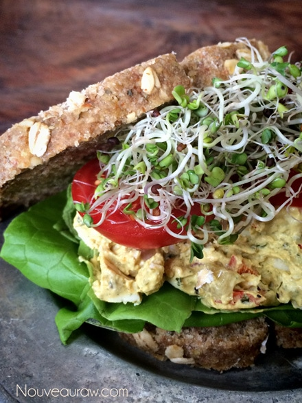
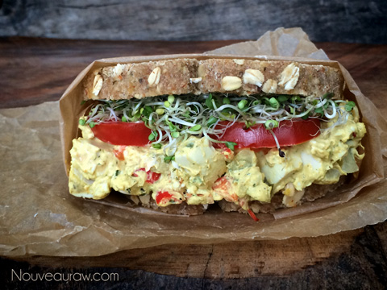

Egg Salad Sandwich

Egg salad sandwiches are a classic comfort food, a special occasion food. They are popular for picnics, family gatherings, Super Bowl parties and all kinds of get-togethers. They were what the turkey is the day after Thanksgiving. Leftover turkey becomes turkey sandwiches. The day after Easter, leftover eggs becomes egg salad sandwiches.
To be honest, I never understood why they were considered a special occasion food, but they always ended up being that way. They are simple to make, so why they never because a typical sandwich for daily lunches is beyond me.
After starting my journey with vegetarian, vegan and raw… I lost sight of egg salad sandwiches. They were so far down the list of foods to not eat that I just gave up on having any thought of them. Well, not anymore! Move over standard veggie sandwiches… you now have a run for your money.
I don’t know how it is for you, but when I started my journey towards eating a healthier diet, I always focused on what foods I couldn’t have, the foods that I had to sacrifice … but these days, I really try to focus on more of what I CAN eat and if you are really honest and dig deep, you will find that there are more foods that you can eat than not.
(From Bob: “These are amazing!”)

Ingredients:
- Vegan Eggless “Egg” Salad (with agar “eggs”) – recipe
- Raw Honey Oat Bread – recipe
- Sliced tomatoes
- Sprouts
Preparation:
- You need 2 whole slices of bread to make a full sandwich, or you can use one slice to make a half-sandwich. :)
- Add a scoop of “egg” salad, top with sliced tomato and sprouts.
- Eat your sandwich whole or cut diagonally! Most of all… enjoy!


© AmieSue.com